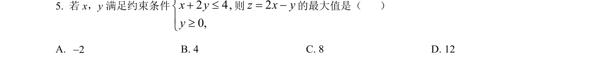
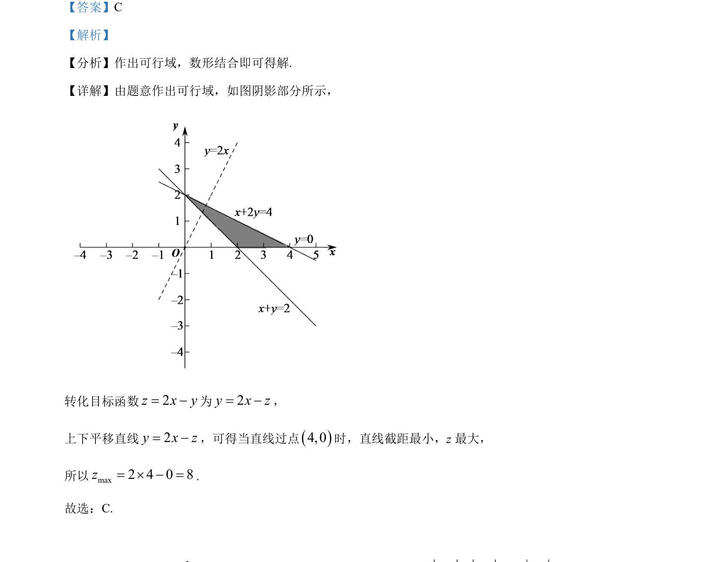

考点：线性规划 可行域 目标函数最值

本题考查线性规划中利用可行域求目标函数最大值的问题。

📄 原 PDF 第 3 页：
素材/真题/吉林/2008-2024·（吉林）数学高考真题/2022年高考数学试卷（文）（全国乙卷）（解析卷）.pdf
【答案】C 【解析】 【分析】作出可行域，数形结合即可得解. 【详解】由题意作出可行域，如图阴影部分所示， 转化目标函数2z x y= -为2y x z= -， 上下平移直线2y x z= -，可得当直线过点()4,0时，直线截距最小，z 最大， 所以max2 4 0 8z= ´ - =. 故选：C.